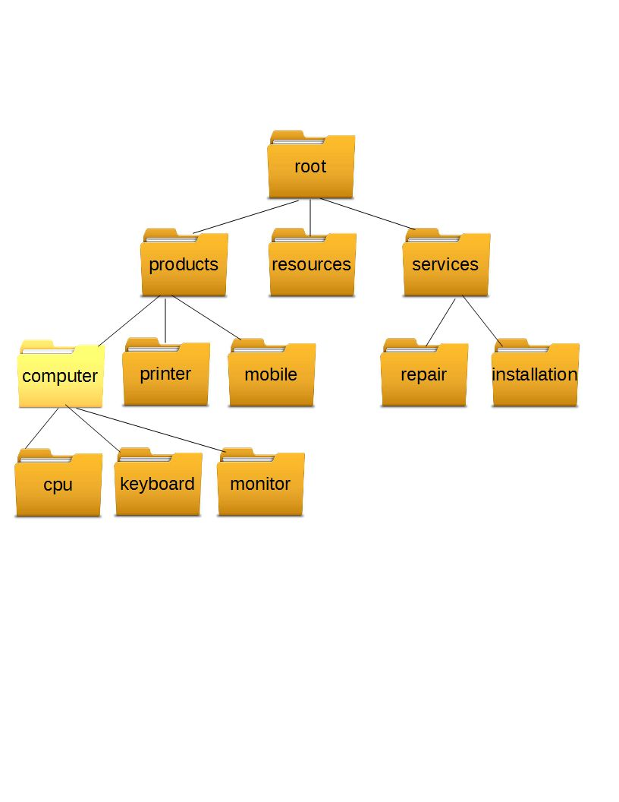

1. To Explain how to organize data on computer
2. To Show the difference between files and directories
3. To Explain what is path of file
All the files are grouped together in the directory structure. The file-system is arranged in a hierarchical structure, like an inverted tree. The top of the hierarchy is traditionally called root (written as a slash / ). To access home or root directory we usually write /home/user-name
In the diagram above, we see that their is a home directory named root which contains three sub-directories products, resources and services, which in turn contains other sub directories.To access a directory we will follow the complete path started from root. Such as the full path to the directory monitor is /root/products/computer/monitor
To run commands or scripts we need a terminal. To start type Terminal in search box and press enter.
The Shell prompt is indicated by a $ sign. It is an indication that OS is ready to accept the commands. Whenever we provide some command here it is executed by the shell. It may be displayed by some other character like % or some thing else.It depends on your computer settings. The shell’s main advantages are its high action-to-keystroke ratio, its support for automating repetitive tasks, and that it can be used to access networked machines. The shell’s main disadvantages are its primarily textual nature and how cryptic its commands and operation can be.
Now we will try to run some simple UNIX commands. write whoami on prompt and press Enter. See what happened
This command returns the name of the user. Here in this case we are assuming that the user name of this computer is esha. Now we try to find our current location by using command pwd. pwd stands for print working directory. It gives us the current directory where we are working now.
by default this is the home directory for user esha.
To see the current date and time we can use date command
To clear the contents of the screen use clear command. It will erase all from the screen except the $ prompt.
When we execute a program on a UNIX system, the system creates or starts, a new process for that program. for example when we run whoami command to find the name of the system user, a new process is started. Operating system provides a unique identity to each process known as pid or process ID. A process, in simple terms, is an instance of a running program.
To find out how many processes are running at any time we can use ps command
We can run process in background or in foreground. By default each process runs as foreground process that is it takes its input from keyboard and sends its output to the monitor. While a foreground process is in progress we can not run any other command until it ends. For long processes it wastes resources. The advantage of running a process as background is that we can perform other tasks too.
To run a proces as background we add & at the end.
To terminate a foreground process we can press ctrl+c. But to terminate a background process we first need to find out the id of that process using ps command and then we can use kill command to terminate it.
If a process ignores regular kill command then we can use -9 switch to kill it.
Each unix process has two ID numbers assigned to it: Process ID (pid) and Parent process ID (ppid). Each user process in the system has a parent process. Most of the commands that we run have the shell as their parent. Run ps -f command which lists both process ID and parent process ID.
It is an interactive diagnostic tool that updates frequently and shows information about physical and virtual memory, CPU usage and load averages.
Next >> Unix Commands